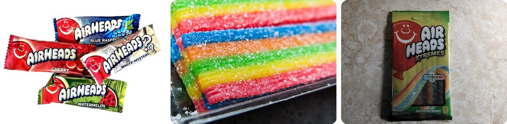
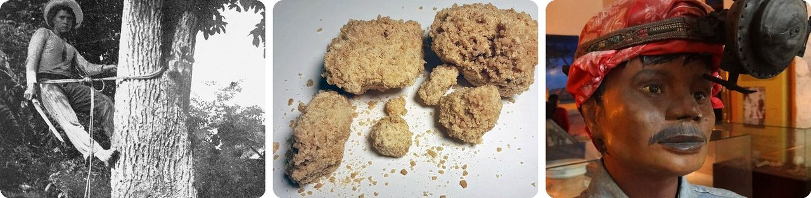
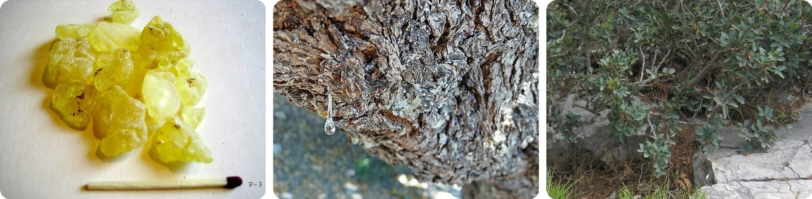
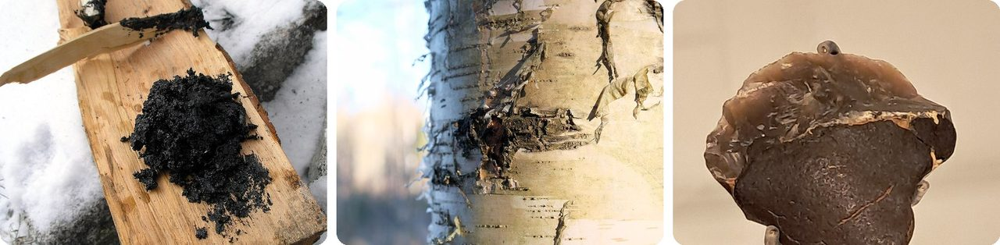
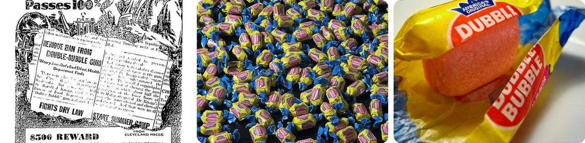
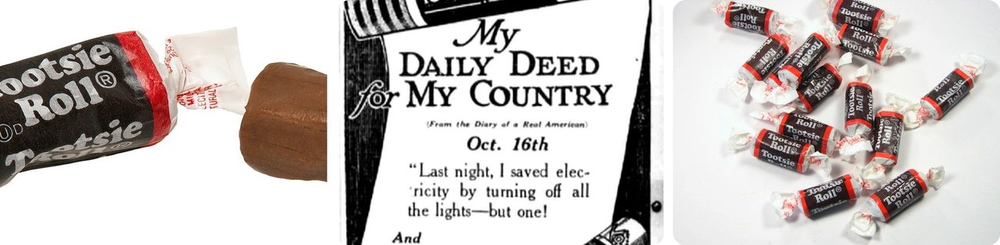
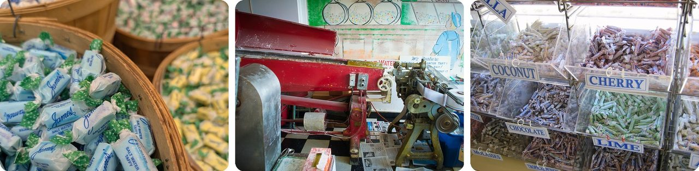
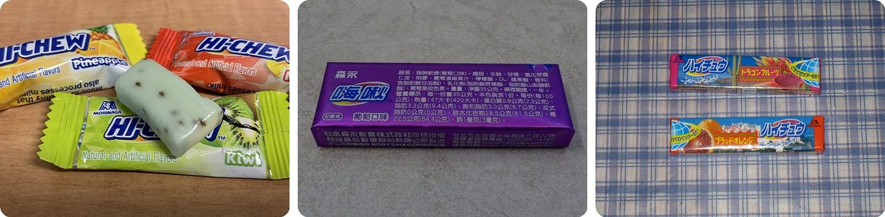
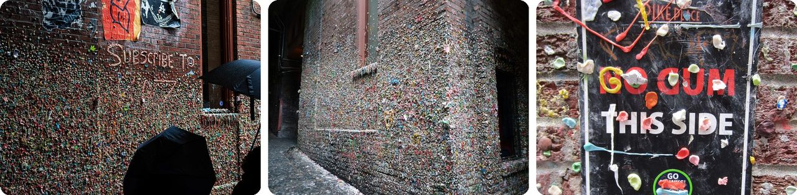

🌍 Top 10 Chewing Gum and Chewy Candy
Oct 10, 2026
1. 🇺🇸 Airheads keep their White Mystery flavor a secret on purpose

Airheads were invented on August 7, 1985, and every Airhead sold in the US is made at one factory in Erlanger, Kentucky. The machines there stir about 3,000 pounds of taffy at a time, roughly the weight of a small car.
The white bar with question marks wasn't there at launch. The company keeps its flavor unknowable on purpose, so people will argue about it.
And here's the favorite theory. The color is added after the flavor, and the machines are so big that when the cooks switch flavors, some of the old one is still in there. So a White Mystery bar might be a mix of whatever two flavors met in the middle. Others say the company just changes it every so often.
It's the candy version of a leftovers surprise.
2. 🇲🇽 Chewing gum started as tree sap from Mexico

Chicle is a sticky sap from Manilkara trees in Mexico and Central America. Workers called chicleros cut zig-zag gashes into the trunk, catch the dripping sap in small bags, and boil it down until it's thick.
The Maya and Aztecs chewed it to hold off hunger and freshen their breath, and the Maya even used it to fill holes in teeth. The word comes from the Aztec word tzictli, "sticky stuff."
In the 1860s, Mexico's former president Antonio López de Santa Anna brought chicle to New York and gave it to an inventor, Thomas Adams, as a possible substitute for rubber. It flopped as rubber, so in 1871 Adams cut it into strips and sold it as chewing gum.
In other words, gum is a failed rubber experiment that tasted too good to throw away.
3. 🇬🇷 On the island of Chios, gum drips from trees as "tears"

Mastic is a resin from the mastic tree, and it's traditionally made on the Greek island of Chios. Every 4 to 5 days in summer, farmers make 5 to 10 small cuts in the bark. Clear drops ooze out and hang there sparkling, which is why they're called the "tears of Chios."
The drops take 15 to 20 days to harden and fall onto white powder spread under the tree. Farmers collect them, wash them, and spend most of the winter cleaning them by hand. Chewed, the brittle drops go soft and white and taste like pine.
People have used it for about 2,500 years. Under Ottoman rule it was worth its weight in gold, and the island's Turkish name means "gum island." The mastic villages were even built like forts, with no doors at street level, to protect the crop.
Think of it as maple syrup that hardens into gum.
4. 🇩🇰 A 5,700-year-old wad of gum held a whole person's DNA

Long before store-bought gum, people in Stone Age Europe chewed birch bark tar, a sticky black pitch made by heating birch bark. It also worked as glue for tools.
On the island of Lolland in southern Denmark, archaeologists found a chewed lump of it about 5,700 years old. In 2019, scientists in Copenhagen read a complete human genome from the spit left inside, the first time a full ancient genome came from something other than bones.
The chewer was a female hunter-gatherer the researchers nicknamed "Lola." Her DNA says she likely had dark skin, dark hair and blue eyes, and traces in the gum show she'd been eating hazelnuts and duck.
Her old chewing gum turned into an ID card 57 centuries later.
5. 🇺🇸 Bubble gum is pink because that was the only dye around

In 1928, Walter Diemer was an accountant at the Fleer gum company in Philadelphia who tinkered with gum recipes in his spare time. He made a batch that was less sticky and stretched far enough to blow bubbles.
The next morning he couldn't make it again, and it took him four months to get it right. The only food coloring in the factory was pink, so that's what he used, and most bubble gum has been pink ever since.
He wrapped 100 pieces, sold them for a penny each at a local candy store, and they were gone in a day. Diemer taught salesmen to blow bubbles so they could show customers how it worked. He never patented it.
Basically, the color of the whole world's bubble gum came down to what was on the shelf.
6. 🇺🇸 The Tootsie Roll is named after the inventor's daughter

Leo Hirschfeld, the son of an Austrian candy maker, came up with the Tootsie Roll in New York and patented a way to give it its chewy texture. He named it after his daughter Clara, whose nickname was "Tootsie." The first ones went on sale in September 1908.
There's a famous war story, too. In 1950, at the frozen Battle of Chosin Reservoir in Korea, US Marines supposedly radioed for "Tootsie Rolls," their code for mortar shells, and got crates of candy parachuted down instead.
It probably never happened. Historians who dug into it found that the airdrops of mortar shells were real, but the candy mix-up looks like a tall tale that grew over time.
It's the candy world's version of a fish story.
7. 🇺🇸 Salt water taffy has no seawater in it

Salt water taffy was first sold in the Atlantic City area of the Jersey Shore in the 1880s. It has salt and water in it, but no seawater. The stories that a storm soaked a shop's candy, or that a helper used ocean water, are probably made up.
What makes taffy chewy is the pulling. The hot candy is stretched, folded over and stretched again, which works in tiny air bubbles and makes it light and soft.
In 1923 a man trademarked the name "salt water taffy" and demanded money from every company that used it. He was sued, and in 1925 the trademark was thrown out because everyone already used the name.
In other words, it's named like a beach souvenir, not like a recipe.
8. 🇸🇬 Singapore banned gum sales after it jammed train doors
In Singapore, used gum was jammed into keyholes, mailboxes and elevator buttons in apartment blocks. Then, after the city's new S$5 billion subway opened in 1987, people stuck gum on the train door sensors, which kept doors from closing and held up service.
So on January 3, 1992, the country banned selling chewing gum. Sellers face fines of up to S$2,000. Chewing it isn't illegal, and travelers can bring a little in for themselves.
Since 2004, dental and nicotine gum can be bought from a pharmacist or dentist, who has to write down the buyer's name. The story that people get caned for gum is a myth. When a reporter said the rule might stifle creativity, Lee Kuan Yew, Singapore's founding prime minister, replied, "If you can't think because you can't chew, try a banana."
Think of it as a whole country putting gum in time-out.
9. 🇯🇵 Hi-Chew was invented so you'd never have to spit out gum

In Japan, taking food back out of your mouth in public is considered rude. That's a problem with chewing gum, which you eventually have to spit out.
So in the 1930s, Taichiro Morinaga, founder of the Morinaga candy company, set out to make a chewy treat you could swallow. In 1931 the company mixed chewy caramel with fruit flavors and called it Chewlets. World War II stopped production, and after the war it slowly turned into Hi-Chew, launched in 1975.
Its texture sits between gum and soft taffy, and more than 170 flavors have come out over the years.
Basically, it's gum you're allowed to swallow.
10. 🇺🇸 Seattle's Gum Wall began with people waiting in line

The Gum Wall is a brick wall in Post Alley, just below Pike Place Market in Seattle. Starting in 1991, people lined up outside a small theater there began sticking their used gum on the wall, sometimes with pennies pushed in.
Market officials scraped it off again and again, then gave up around 1999 and called it a tourist attraction. In 2015 they steam-cleaned the whole wall for the first time in 20 years, because the sugar was eating into the bricks. It took 130 hours and removed over 2,350 pounds of gum, more than a ton.
The gum came back. Today the wall is about 54 feet long and 8 feet high, with an estimated 180 pieces of gum per brick.
It's the underside of a school desk, turned into a landmark.
Fun fact
Santa Anna, the Mexican leader who handed chicle to Thomas Adams, lost most of his left leg to French cannon fire in 1838 and had it buried with full military honors. Years later an angry mob dug the leg up and dragged it through the streets. During the Mexican–American War, US soldiers captured his cork artificial leg at the Battle of Cerro Gordo, and it's still held as a war trophy by the Illinois State Military Museum. Odd souvenirs like that turn up all through history: next time, the strangest war trophies ever taken.
Photo credits (Wikimedia Commons)
- #1: Airheads candy flavors.jpg by Harrison Keely, CC BY 4.0
- #1: Airheads Extreme Sweet Sour Belts Candy (2), May 2010.jpg by Steven Depolo, CC BY 2.0
- #1: Airheads extreme package front.jpg by ᐃᓄᒃᑎᑐᑦ, CC0
- #2: A 'Chiclero' at Work - in the forest area in Mexico - A Chiclero is a person who climbs the Chicle tree, the sap of which is the basis of chewing gum(GN03499) (cropped).jpg by State Government Photographer, CC0
- #2: Chicle.jpg by Mister Pommeroy, CC BY-SA 4.0
- #2: Diorama of Mayan Chiclero Gum Farmer - Municipal Museum - Valladolid - Yucatan - Mexico.jpg by Adam Jones, Ph.D., CC BY-SA 3.0
- #3: Mastic.jpg by unknown, CC BY-SA 3.0
- #3: Gotaq.jpg by Ailinaleixo, CC BY-SA 3.0
- #3: Pistacia lentiscus · Kapi 851 06, Grécia by (c) zebedeugalinha, some rights reserved (CC BY), CC BY
- #4: Birkenpech.JPG by Jorre, CC BY-SA 3.0
- #4: Betula pendula bark.jpg by kallerna, CC BY-SA 4.0
- #4: Vuurstenen werktuig met berkenpek.jpg by Ellywa, CC BY-SA 4.0
- #5: 1929 Dubble Bubble ad.jpg by Fleer Co., Public domain
- #5: Dubble Bubble Bubble Gum.jpg by TaurusEmerald, CC BY-SA 4.0
- #5: Dubble Bubble (flickr) by andrewmalone, CC BY 2.0
- #6: Tootsie-Roll-WU.jpg by Evan-Amos, CC BY-SA 3.0
- #6: 1918 Tootsie Roll newspaper ad.png by Tootsie Roll, Public domain
- #6: Tootsie rolls (flickr) by oskay, CC BY 2.0
- #7: Baskets of saltwater taffy candy on Boardwalk in Atlantic City New Jersey (flickr) by radicalespresso, Public domain
- #7: Salt Water Taffy Stretching and Wrapping Machines.jpg by Visitor7, CC BY-SA 3.0
- #7: Flavours of salt water taffy (448154854).jpg by Bob Snow, CC BY 2.0
- #8: SMRT East West Line train door 10-11-2023.jpg by LN9267, CC BY-SA 4.0
- #8: Kovan MRT Station platform 20161203.jpg by DAJF, CC BY-SA 4.0
- #8: Singapore MRT (flickr) by shankar s., CC BY 2.0
- #9: Hi-Chew.jpg by EnzoTC, CC BY-SA 4.0
- #9: Taiwan Morinaga Hi-Chew grape flavor 35g 20160302.jpg by Solomon203, CC BY-SA 4.0
- #9: New Hi-Chew flavors (flickr) by Wallslide, CC BY 2.0
- #10: The Gum Wall and Umbrellas at Pike Place Market, Seattle, Washington, 2025.jpg by Julian Lupyan, CC0
- #10: Gum Wall - Seattle (flickr) by karlnorling, CC BY 2.0
- #10: Gum Wall, Pike Place Market, Seattle (2014) - 3.JPG by Another Believer, CC BY-SA 3.0

,_May_2010.jpg){kind=link}

_(cropped).jpg){kind=link}


.jpg){kind=link}


_-_3.JPG){kind=link}